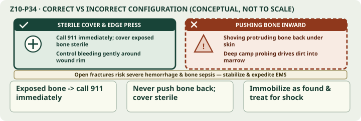

Z10-P34 · Wilderness medicine · New manuscript
Protect open fractures from contamination and expedite urgent EMS
Manage life- and limb-threatening open (compound) fractures safely without pushing bone ends back inside the wound.
When it applies · Any suspected fracture where bone breaks through the skin or an open wound communicates directly with a fracture site.
Equipment · Clean sterile moist/dry gauze dressings, gloves, padding, and emergency communications.

Actions
- Call 911 for a suspected open fracture. Report the injury, severe bleeding and any change in alertness or limb color.[M09, M01, T02]
- Use emergency bleeding-control guidance for life-threatening blood loss. Keep pressure off protruding bone itself and do not push bone back into the wound.[M01, M02, M09]
- Protect the wound with a clean dressing. Follow dispatch on moving or supporting the limb, and monitor breathing, alertness and circulation while waiting for help.[M09, M22]
Failure recognition · Attempting to rinse deeply or push an exposed tibia back under the skin in camp, driving dirt deep into the bone marrow.[M09, M06]
Verify · Confirm bleeding is controlled gently around edges, sterile cover protects exposed tissue, distal CSM is checked, and EMS is inbound.[M09, M01, T02]
Stop or change course · Heavy bleeding uncontrolled by gentle pressure, cold pale extremity, or shock signs trigger immediate maximum-priority trauma escalation.[M09, M02, M05]
Evidence and editorial notes
- M01 · American College of Surgeons · STOP THE BLEED Training Course (current web edition)
- Section: Ensure Your Own Safety; Find Life-Threatening Bleeding; Compress · Conditions: Lay responder encountering severe external hemorrhage
Support: Ensure scene safety first, call 911, expose the wound to locate life-threatening bleeding, and apply firm continuous direct pressure with clean gauze or cloth.
Limitations: Does not replace formal hands-on Stop the Bleed training or EMS trauma care. · Conflicting evidence: None across ACS/ARC guidelines.
Editorial note: Separates life-threatening arterial/venous hemorrhage from minor scrapes. · Specialist reviewer: Wilderness medicine and trauma EMS
Primary source · checked 2026-11-24 - M02 · American Red Cross · How to Apply a Tourniquet (Current web edition)
- Section: How to Apply a Tourniquet; Windlass Rod Tourniquet · Conditions: Life-threatening extremity bleeding, visible wound, suitable commercial device
Support: Place the device 2–3 inches toward the torso from the wound, between wound and heart, clear of joints. Tighten until bleeding stops and leave in place for medical personnel.
Limitations: Identify a visible wound and follow the exact device and training. This is not the tactical high-and-tight rule or a pediatric device-fit approval. · Conflicting evidence: See A02 claim audit for boundaries.
Editorial note: Governs extremity hemorrhage escalation and strict EMS handoff documentation. · Specialist reviewer: Trauma EMS and wilderness medicine
Primary source · checked 2026-11-25 - M05 · NIH / MedlinePlus · Shock (current web edition)
- Section: Recognizing Circulatory Shock and Positioning · Conditions: Injured or ill patient with pale cool clammy skin, rapid weak pulse, confusion, or dizziness
Support: Treat suspected shock as a life-threatening emergency: call 911, control external bleeding, keep the person warm and insulated from cold ground, and do not give food or drink.
Limitations: Field responders cannot diagnose internal hemorrhage or administer IV fluids. · Conflicting evidence: None; reinforces keeping suspected shock patients NPO and warm.
Editorial note: Core shock recognition and stabilization boundary in Z10. · Specialist reviewer: Emergency and wilderness medicine
Primary source · checked 2026-11-24 - M06 · NIH / MedlinePlus · Wounds and Injuries (current web edition)
- Section: Minor Wound Cleaning, Protection, and Infection Red Flags · Conditions: Superficial cuts, scrapes, and abrasions with potable water available
Support: Rinse minor wounds thoroughly with clean potable water, cover with a clean sterile dressing, and monitor for worsening redness, warmth, swelling, pus, red streaks, or fever.
Limitations: Deep punctures, animal bites, retained foreign bodies, or heavily contaminated wounds require clinical evaluation and tetanus review. · Conflicting evidence: None; separates clean potable rinsing from harsh chemical wound scrubbing.
Editorial note: Anchors field wound hygiene and infection escalation cards. · Specialist reviewer: Wilderness medicine and wound care
Primary source · checked 2026-11-24 - M09 · NIH / MedlinePlus · Fractures (current web edition)
- Section: Suspected Fracture Stabilization and Neurovascular Checks · Conditions: Suspected limb fracture, deformity, or inability to bear weight
Support: Immobilize the injured limb in the position found using padded support without attempting to straighten visibly deformed bones; check circulation, sensation, and movement beyond the injury and arrange evacuation.
Limitations: Open fractures (bone breaking skin) and femur/pelvis injuries carry high bleeding and infection risk requiring urgent EMS. · Conflicting evidence: None; forbids lay fracture reduction in routine field care.
Editorial note: Anchors splinting, neurovascular checks, and evacuation urgency in Z10. · Specialist reviewer: Orthopedics and wilderness medicine
Primary source · checked 2026-11-24 - M22 · AHA and American Red Cross · 2024 Guidelines for First Aid (2024)
- Section: Positioning of the Ill or Injured Person · Conditions: Decreased alertness with normal breathing; no suspected neck/back/hip/pelvis injury
Support: Side-lying recovery position can be reasonable; reassess breathing continuously and act if it becomes abnormal.
Limitations: Avoid unnecessary movement after suspected spinal or pelvic injury. A recovery position may delay recognition of apnea if unmonitored. · Conflicting evidence: See A02 claim audit for boundaries.
Editorial note: Anchors airway-protection positioning and handoff documentation. · Specialist reviewer: EMS and emergency medicine
Primary source · checked 2026-11-25 - T02 · American Red Cross · First Aid Steps (current web edition)
- Section: First Aid Steps > Call 9-1-1 · Conditions: Lay emergency response to unresponsiveness, abnormal breathing or severe bleeding
Support: Activate EMS and get needed equipment. Follow dispatcher directions and act within training.
Limitations: Remote locations may delay EMS arrival, requiring sustained stabilization after activation. · Conflicting evidence: None; aligns with NPS-E.
Editorial note: Mandates early emergency activation and dispatcher adherence. · Specialist reviewer: EMS and wilderness medicine
Primary source · checked 2026-11-24
Source lineage · NIH MedlinePlus Fractures and Wounds; new manuscript · Classification · New manuscript.